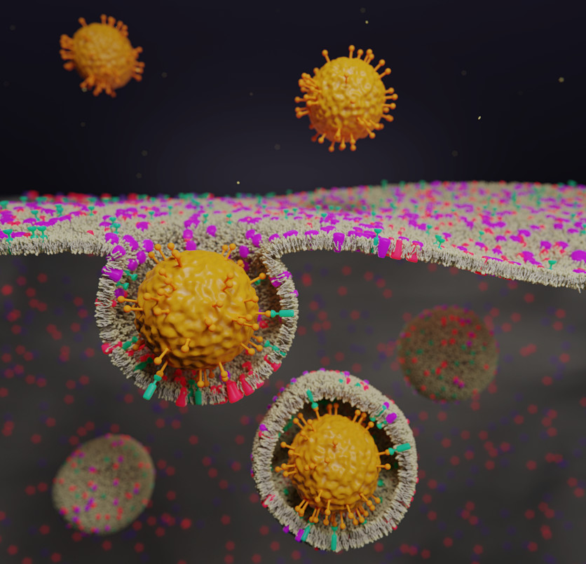

I'm Nicola De Mitri *
I live in Cambridge, UK, and I'm a scientific software developer at Enthought.
I work with Python on consulting projects involving data management and visualisation.
This website is a work in progress!
research

pdf 14 MB
Publications see on Google Scholar
Belenguer, A. M., Lampronti, G. I., De Mitri, N., Driver, M., Hunter, C. A., & Sanders, J. K. (2018). Understanding the influence of surface solvation and structure on polymorph stability: a combined mechanochemical and theoretical approach. Journal of the American Chemical Society, 140(49), 17051-17059.
Pagliai, M., Mancini, G., Carnimeo, I., De Mitri, N., & Barone, V. (2017). Electronic absorption spectra of pyridine and nicotine in aqueous solution with a combined molecular dynamics and polarizable QM/MM approach. Journal of computational chemistry, 38(6), 319-335.
Prampolini, G., Campetella, M., De Mitri, N., Livotto, P. R., & Cacelli, I. (2016). Systematic and automated development of quantum mechanically derived force fields: The challenging case of halogenated hydrocarbons. Journal of chemical theory and computation, 12(11), 5525-5540.
Salvadori, A., Licari, D., Mancini, G., Brogni, A., De Mitri, N., & Barone, V. (2014). Graphical interfaces and virtual reality for molecular sciences. Reference Module in Chemistry, Molecular Sciences and Chemical Engineering (chapter of), Elsevier.
Prampolini, G., Monti, S., De Mitri, N., & Barone, V. (2014). Evidences of long lived cages in functionalized polymers: Effects on chromophore dynamic and spectroscopic properties. Chemical Physics Letters, 601, 134-138.

see at publisher
De Mitri, N., Prampolini, G., Monti, S., & Barone, V. (2014). Structural, dynamic and photophysical properties of a fluorescent dye incorporated in an amorphous hydrophobic polymer bundle. Physical Chemistry Chemical Physics, 16(31), 16573-16587.
De Mitri, N., Monti, S., Prampolini, G., & Barone, V. (2013). Absorption and emission spectra of a flexible dye in solution: A computational time-dependent approach. Journal of chemical theory and computation, 9(10), 4507-4516.
Barone, V., Cacelli, I., De Mitri, N., Licari, D., Monti, S., & Prampolini, G. (2013). Joyce and Ulysses: integrated and user-friendly tools for the parameterization of intramolecular force fields from quantum mechanical data. Physical Chemistry Chemical Physics, 15(11), 3736-3751.
Lipparini, F., Cappelli, C., Scalmani, G., De Mitri, N., & Barone, V. (2012). Analytical first and second derivatives for a fully polarizable QM/classical hamiltonian. Journal of chemical theory and computation, 8(11), 4270-4278.
3D graphics
I mostly do it as a hobby...
{kind=link}
{kind=link}
{kind=link}
but I've also been commissioned scientific illustrations (thanks Anđela Šarić for the publicity!)
{kind=link}
{kind=link}

Featured on the journal cover: see at publisher.
You can find more (including videos) at Artstation or on Instagram.
me elsewhere
Thoughts about communication and science communication, excitement about technology advances and space exploration, rants about Italian – with a pinch of British – politics, can be found in two versions: unrestricted or bound to 280 chars.
I hang out on StackExchange sometimes, mostly for blender Q&A. I would like to pick up code-golfing at some point...
Here is when I thought photography was going to be my hobby, or even a income supplement 😂 (spoiler: it takes much more than that).
Here's my account on the Italian language Wikipedia. I've even been an elected admin briefly (maybe the shortest-lived ever); but now the account is almost abandoned 😢. Back in the days, it has been my personal gateway to online communities, a school of life on many subjects: freedom, openness, consensus, IP laws.
Oh, in case you need it, i'm nicola · dmt ∝ gmail · com.
friends
WIP
resources
Hopefully I'll have something for this section in the future